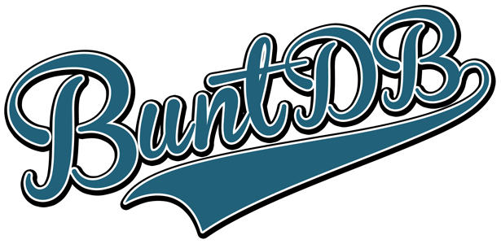
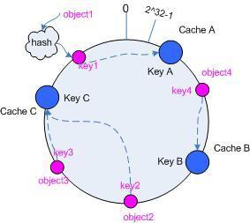

Hello World
CodeTengu Weekly 碼天狗週刊
CodeTengu Weekly 會在 GMT+8 時區的每個禮拜一早上 10:00 出刊，每一期會從目前的 curator 名單中選出三位來負責當期的內容，每個 curator 各自負責不同的領域。如果你在這一期沒有看到自已感興趣的東西，說不定下一期就會有了。你也可以瀏覽一下前幾期的內容。
以下是目前的 curator 陣容：
- @vinta - I failed the Turing Test - 科幻迷，最近在讀「奇點天空」
- @saiday - Imnotyourson - 太熱了
- @tzangms - Oceanic / 人生海海 - 衝動型購物
- @fukuball - ImFukuball - 最近好窮，有案子可以接嗎？
- @wancw - 為了工作開始看韓劇
- @mingderwang - Ethereum enthusiast
- @kako0507 - 熱愛嘗試新事物的前端工程師
- @chiahsien - 我們在找 iOS 工程師與其它人才，歡迎來跟我當同事。
- @hiroshiyui - 非典型司書
- @uranusjr - Smaller Things - 不愛談技術的技術人，最近對做菜很有興趣
- @kkdai - 態度萬歲 - 喜歡 Golang 的略懂工程師
- @yhsiang
大家也可以關注我們的 Facebook、Twitter、GitHub 或微博，有很多 Weekly 看不到的內容。有任何建議或疑問也可以來 Gitter 聊聊，歡迎亂入 👺
 @tzangms
@tzangms
 @mingderwang
@mingderwang
minikube 線上教學
每次都介紹別人的文章, 趁爸爸節寫一篇自己的教學網頁來讓大家利用 minikube 簡單的設定, 安裝一個 kubernetes 的學習環境。kubernetes 可以讓你在本機或雲端, 甚至多台主機同時管理和安裝部署 dockers, 需要更進一步了解 kubectl 指令的人可以在安裝好環境之後, 利用這 cheat sheet。
Hour Of Code 冰雪奇緣介紹
我也要介紹冰雪奇緣, 看完連結裡的影片說明後, 就可以帶你的小孩 (如果沒有小孩 , 帶你女朋友, 或另一半) 來玩 hour of code。不管是憤怒鳥或冰雪奇緣, 過關後就能得到寫程式的證書喔! 爸爸節快樂...
 @chiahsien
@chiahsien
用 Objective-C 實作 Redux 架構
最近因為工作上的需要，所以找了一些資料來研究該如何管理 app 的程式狀態，讓每個頁面在存取資料時可以維持資料的一致性，結果讓我找到了 Redux 這個架構。
最初是 Facebook 提出了 Flux 架構，而 Redux 是其改良版，因為它簡單好懂好實作所以提出之後就大受歡迎。這個架構提出的時候是針對網站設計的，後來有人把這個概念搬到 Swift 實作，但我一直沒找到有人分享 Objective-C 的實作心得，所以我就自己動手做了一遍並寫了這麼一篇心得，用起來的感覺其實滿舒服的。
另外工商服務一下，敝公司正在找 iOS 工程師與其它優秀人才，歡迎來跟我當同事！
延伸閱讀：
图说设计模式 — Graphic Design Patterns
Design patterns 這種東西，在小時候懵懵懂懂剛接觸程式設計的時候覺得它很重要，但看完之後卻無法體會它的重要性，也不知道該怎麼運用。長大之後碰的程式多了，才越發瞭解它的重要性，也越覺得該學的東西還有很多。
這個網站列出了 16 個常用的 design patterns，並且針對每個 pattern 的定義、背後動機、優缺點、使用情境、代碼分析等等，都有詳細說明。獻給所有覺得自己不懂 design patterns 的人，你並不孤單。
Enums as configuration: the anti-pattern
相信很多開發者一定都有用過 enum 來列出所有選項，然後再用 switch-case 來判斷每個選項並做出後續動作，通常在做 UI 相關的設定最常見到這種做法。但是作者認為這不是一個好作法，理由是：
- 你在
switch-case漏了幾個選項，compiler 也不會有 error，但有可能你的程式就這麼錯了。 - 如果你修改或刪除了幾個選項，其他用到的程式碼也要跟著改，不然可能會導致錯誤結果或編譯失敗。
- 使用者只能用固定的這幾個選項，無法自行新增，這樣不夠彈性。
所以作者認為不應該使用 enum 作為設定選項，而是要設計一個 configuration object，所有可以讓使用者調整的設定都包在裡面，開發者只要接受這個 object 並做出相對應的調整即可。像是 URLSession 跟 URLSessionConfiguration 就是很好的例子。
Writing High-Performance Swift Code
Swift 官方 repository 所提供的最佳化奇技淫巧，它的目標讀者是編譯器跟標準函式庫的開發者，所以有些方法不適合用在一般的程式開發，但多瞭解一下也是好的。
Design patterns for safe timer usage
Timer 絕對是 iOS 開發過程中最常用的到元件之一，它看起來非常的簡單，用法也是很直覺，但它的坑卻是意外的多。這篇文章列出了使用 Timer 的一些正確姿勢，帶你躲過一個又一個的地雷。雖然文章是用 Swift 3 寫成，不過它的概念是共通的。
延伸閱讀：
 @kkdai
@kkdai

BuntDB is a fast, embeddable, in-memory key/value database for Go with custom indexing and geospatial support
參考著 BoltDB 並且使用一樣的 Raft Consensus 做一致性管理． BuntDB 打著以下特點 (跟 BoltDB 有些許的不同處):
- 支援自訂索引
- 適合 geospatial data 處理
- BuntDB 使用 Memory ，而 BoltDB 使用檔案存取資料．
- 作者說針對一致性的管理上， BuntDB 有改寫過 Raft 並且比 BoltDB 的 Raft 更快 ( 令人相當驚訝... )
想瞭解更多的與 BoltDB 的差異可以看看原作者在 HN 上面的討論 ..
I Love Go; I Hate Go
Delphix 的 CTO - Adam Leventhal 分享他對 Golang 的又愛又恨的情緒．
喜愛的部分包含著: Gofmt ， Go 很直覺， Toolchain 很強大． 討厭的部分包含著: Go 沒有 Assertion ， Go compiler omits frame pointers ...
雖然有愛也有恨，但是 Adam Leventhal 也說到你不能因為一些小小的缺點就跟你的愛人分手． Golang 依舊有許多令人讚賞的地方，快來仔細看看這篇介紹吧..

dgryski/talks: consistent hashing in go
Damian Gryski 身為 Books.com 的資深工程師．dgryski 除了是重度的 Golang 愛好者外，還喜歡讀很多資訊科學的論文與研究各種進階的資料結構．
這份 Talk 從原來的問題 Load Balancer 或是 K/V 存放的問題來出發．介紹了一開始的解決方式 Hashing Mod N ，再來探討 Consistent Hashing 如何解決 Hashing Mod N 與的節點新增與刪除帶來變動的問題，最後帶到 Jump Hashing 與 Maglev Hashing ． 想要好好瞭解 Ring Hashing 資料結構能如何幫你解決 Load Balancer 問題的話，一定得好好的閱讀這篇．
uber/ringpop-go: Scalable, fault-tolerant application-layer sharding for Go applications
Uber RingPop 是他們在去年開源的一個應用架構． 本來是使用 Node.JS 來做開發的，這次推薦的是 Golang 版本的．
RingPop 具有相當多的功能，簡單條列如下:
- 透過 Gossip 來傳遞資訊
- 透過 Consistent Hashing 來分散保存使用者資訊
- 資訊透過 Google farmhash 作為 Consistent Hashing 的 Hash Function
透過這些方式可以建置出具有可擴展性，分散式的應用程式架構．
想瞭解更多資訊，可以查看以下鏈結: